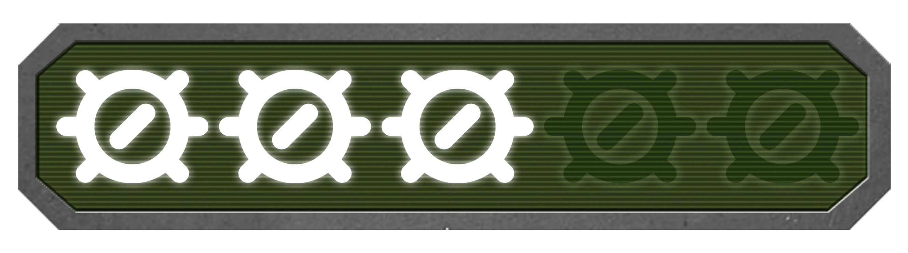

Grand Theft Auto
Grand Theft Auto é um marco na história dos videogames, sendo o jogo que deu início a uma das franquias mais populares e influentes do mundo dos jogos eletrônicos. Com sua perspectiva top-down, o jogo oferece uma abordagem única e nostálgica.
A liberdade de exploração e o estilo de jogo não linear são os pontos fortes de "Grand Theft Auto". Os jogadores são imersos em uma cidade aberta, onde podem realizar missões, roubar carros, completar desafios e interagir com o ambiente de maneiras variadas.
No entanto, é importante ressaltar que o jogo apresenta limitações em termos de controles e mecânicas. A perspectiva top-down pode dificultar a precisão dos movimentos e o combate pode se tornar repetitivo e limitado. Além disso, os gráficos, embora sejam adequados para a época, podem parecer datados atualmente.
Apesar dessas limitações, Grand Theft Auto é um jogo emblemático que merece reconhecimento por seu papel na evolução dos jogos de mundo aberto. É um verdadeiro clássico que proporciona uma experiência divertida e nostálgica para os fãs da série e para aqueles que apreciam os primórdios dos jogos de mundo aberto.